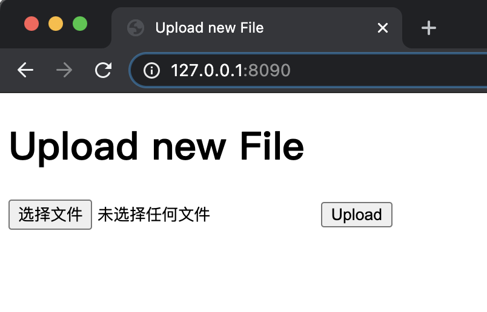

- 00 导读 入门Python的必备知识.md
- 00 开篇词 重复工作这么多，怎样才能提高工作效率？.md
- 01 拆分与合并：如何快速地批量处理内容相似的Excel？.md
- 02 善用Python扩展库：如何批量合并多个文档？.md
- 03 图片转文字：如何提高识别准确率？.md
- 04 函数与字典：如何实现多次替换.md
- 05 图像处理库：如何实现长图拼接？.md
- 06 jieba分词：如何基于感情色彩进行单词数量统计？.md
- 07 快速读写文件：如何实现跨文件的字数统计？.md
- 08 正则表达式：如何提高搜索内容的精确度？.md
- 09 扩展搜索：如何快速找到想要的文件？.md
- 10 按指定顺序给词语排序，提高查找效率.md
- 11 通过程序并行计算，避免CPU资源浪费.md
- 12 文本处理函数：三招解决数据对齐问题.md
- 13 Excel插件：如何扩展Excel的基本功能？.md
- 14 VBA脚本编程：如何扩展Excel，实现文件的批量打印？.md
- 15 PowerShell脚本：如何实现文件批量处理的自动化？.md
- 16 循环与文件目录管理：如何实现文件的批量重命名？.md
- 17 不同操作系统下，如何通过网络同步文件？.md
- 18 http库：如何批量下载在线内容，解放鼠标（上）？.md
- 19 http库：如何批量下载在线内容，解放鼠标（下）？.md
- 20 不同文件混在一起，怎么快速分类？.md
- 21 SQLite文本数据库：如何进行数据管理（上）？.md
- 22 SQLite文本数据库：如何进行数据管理（下）？.md
- 23 怎么用数据透视表更直观地展示汇报成果？.md
- 24 条形、饼状、柱状图最适合用在什么场景下？.md
- 25 图表库：想要生成动态图表，用Echarts就够了.md
- 26 快速提取图片中的色块，模仿一张大师的照片.md
- 27 zipfile压缩库：如何给数据压缩&加密备份？.md
- 28 Celery库：让计算机定时执行任务，解放人力.md
- 29 网络和邮件库：定时收发邮件，减少手动操作.md
- 30 怎么快速把任意文件格式转成PDF，并批量加水印？.md
- 春节特别放送1 实体水果店转线上销售的数据统计问题.md
- 春节特别放送2 用自顶至底的思路解决数据统计问题.md
- 春节特别放送3 揭晓项目作业的答案.md
- 结束语 和我一起成为10X效率职场人.md
17 不同操作系统下，如何通过网络同步文件？
你好，我是尹会生。
你有没有过这种经历：慌慌张张地去会议室开会，突然发现自己需要的文件却在工位的台式电脑中。因为文件比较大大，通过互联网下载需要很长时间。如果用网盘来中转放在两个电脑上的文件，传输速度又很慢。
我猜这个时候你就会想：如果能用一台电脑实现文件的上传和下载，那文件传输是不是就非常方便快速了。
这当然是可以实现的。所以今天，我就教你怎样用Python基于HTTP协议，来实现跨操作系统的文件上传和下载功能。
今天要学习的代码都不长，比较精简，又和文字相得益彰，所以学起来也不会太累。那接下来就跟着我的思路走，我们先来了解一下使用Python来实现文件上传和下载的优势。
为什么要使用Python？
实现文件下载的软件，相信你也用过很多，比如微信、QQ。用这些软件来传输文件，不仅要连接互联网，而且还有文件大小的限制。那如果用商业软件呢？传输虽然方便，但是就不能跨操作系统，而且还有可能需要付费。
所以综合下来，既要免费，又要传输快、没有大小限制的实现方式有没有呢？聪慧如你，一定知道接下来我会开始讲怎么用Python来实现文件的上传和下载功能了。别着急，我还要再唠叨几句关于用Python来实现的优势，这样你会学得更有劲儿。
首先，用法简单。只要一行代码，就能实现文件的浏览和下载功能。
其次，跨操作系统，适用范围广。只要安装了Python默认支持的文件下载需要的模块，那么在Windows、macOS、Linux上就都能用。
最后，传输速度快。和网盘、微信不同，Python的文件下载功能，是基于局域网通信的，不需要通过互联网中转，所以也就没有了传输速度和文件大小的限制。
知道了用Python来实现的优势，那接下来我们就进入正题。我会结合代码，来给你讲解用Python怎么实现文件的浏览和下载功能。代码不会很长，所以你学起来也不会很累。
一行代码，实现文件的浏览和下载
使用Python实现文件的浏览和下载，只需要一行代码。如下：
python3 -m http.server 8080
通过在命令行运行这行代码之后，就能通过“http://你的IP地址:8080”浏览和下载文件了。
这行代码很简单，但你要仔细看的话，会发现这行代码的执行过程和我们之前执行脚本的过程有比较大的差别，而且通过“http.server”模块的加载就直接运行了Python的脚本，这两种功能都是我们之前没有接触过的。
虽然没有接触过，但是学起来不会很难，那么接下来我就从怎么通过命令行运行模块，以及怎么使用模块提供一个HTTP服务这两方面来讲解这行代码。
如何通过命令行运行模块
要通过命令行运行一个模块，我们需要先通过Python命令找到“http.server”模块的第一条命令，然后再来执行。而找到“http.server”模块，非常关键的就是”-m”参数。我来重点讲解一下。
从执行方式上，这行代码和我们以往执行的代码不同。我在Python命令和模块之间使用了“-m”参数，而且“-m”参数后面会跟着要执行的Python的模块“http.server”。
“http.server”在你电脑中保存的路径是“/模块所在目录/http/server.py”，它也是一个“.py”结尾的文件，会被保存在你电脑上Python文件夹中的“lib”文件夹下。
如果不使用“-m”参数，那就像我们之前执行的代码一样，Python会执行当前目录下的.py 文件。所以在这里你要特别注意一下，增加了“-m”参数前后，执行的.py文件位置是不同的。
如果要查看这个模块是怎样通过Python实现的，那么我们需要先找到这个模块的所在目录。核心实现代码我写了出来，供你参考。
$ python3
>>> import http
>>> http.__file__
'/Library/Frameworks/Python.framework/Versions/3.7/lib/python3.7/http/__init__.py'
在这段代码中，我使用了我们之前学习过的内置变量“file”，得到了该模块所在的位置。在以后的工作中，你可以使用这种方式查找任意一个你想要了解的模块位置。
不过你也要知道，由于你在安装Python时，会根据自己的习惯选择自定义的目录，或者你使用的是Windows操作系统，所以你得到的目录可能会和我不同，但这并不影响你阅读查找该模块的实现代码。
如果你还想查看Python其他模块保存在哪个目录，可以在没有加载模块的前提下，获得所有模块的位置，代码如下：
import sys
sys.path
# 执行结果
['', '/Library/Frameworks/Python.framework/Versions/3.7/lib/python3.7', '/Library/Frameworks/Python.framework/Versions/3.7/lib/python3.7/site-packages']
你会发现，在执行“sys.path”得到的列表中，还会出现一个“site-packages”目录，这个目录是你使用pip3安装的第三方模块默认的位置。当你需要学习Python库的代码时，可以使用这个方法找到所有安装的包的目录。
“-m”参数不但能让Python从“sys.path”中找到要执行的模块，还能够自动执行这个模块。以“http.server”为例，Python会首先找到“lib/python3.7/http/server.py”， 然后运行“server.py”文件。
由于该文件中使用了“if name == ‘main’:”这样一条语句，所以Python会从这一行开始执行“server.py”文件。此外，我还为“http.server”指定了参数“8080”， “server.py”会通过“argparse”库对“8080”这个参数进行处理。
如何使用“http.server”模块提供HTTP服务
刚才我们讲了怎么通过命令行来运行“http.server”模块，事实上，这个模块****是基于HTTP协议实现的文件浏览和下载功能。接下来我们就先了解一下HTTP协议的主要工作过程。
使用HTTP协议的好处是它能够跨平台，而且还比其他协议简单。那么要想掌握HTTP协议，你得要知道HTTP协议提供了两种角色：
- 为其他人提供服务的服务端；
- 享受服务的客户端。
我们一般把“http.server”称为HTTP服务端，把浏览器称作HTTP客户端。服务端和客户端通信时，会采用它们的主要协议–HTTP协议。
它们的通信过程就像是在打电话，当你给对方打电话时，首先要输入对方的手机号码。同理，在计算机中，手机号码就是服务端的IP地址和端口，接通电话后，双方要想互相听懂要传递的信息，必须使用一种双方都能理解的语言，这个语言在计算机中就是HTTP协议。所以一句话总结就是，相同的语言就是文件传输的协议。
了解了HTTP协议的主要工作过程，那接下来就是它建立连接的过程了。就像我为你举的例子一样，对方的手机号码在HTTP协议就是IP地址和端口。
比如我为HTTP服务器指定的端口是8090，我的IP地址是“192.168.0.100”，那我就可以通过浏览器使用“http://192.168.0.100:8090”进行访问。可以看到，在访问的时候，我手动指定了协议、IP地址和端口。
所以“http.server“模块不仅可以提供HTTP协议，还是一个灵活指定IP和端口的HTTP服务端。这也就是说，http.server模块运行后，能让浏览器访问到服务端。
由于客户端服务端都采用HTTP协议，那么服务端列出的文件目录会自动被浏览器翻译给客户端的用户，你也就能浏览器查看到服务器上的文件名称，并把服务器的文件下载到客户端的电脑上，这就是“http.server”模块能够实现下载的原理和过程了。
另外，我还要提醒你，在文件下载时，一定要注意共享的安全性。因为那些没有用户认证功能的HTTP文件下载方案，其他人都可以通过IP地址和端口直接获取你电脑中的文件，由此造成信息泄漏。因此在共享完成后，你需要把服务端及时关闭。
不过由于“http.server”默认没有提供文件上传的功能，手动编写也需要比较复杂的代码逻辑，因此，我来通过另一个Flask模块，它能通过简单的代码实现文件上传。
如何实现文件的上传
虽然我们要利用最精简的代码来把文件上传到服务端，但是它也要比下载功能复杂得多，因为基于HTTP协议的上传，我们需要自行编写HTML页面，来提示用户怎么上传，怎么使用POST方法访问服务器，以及怎么指定上传后文件的保存位置。
我根据Flask模块的官方文档的上传代码，进行了精简，考虑到你目前对编程的理解还比较基础，所以我把用户验证和文件扩展名验证功能去掉后，得到了如下的代码。通过这段代码，可以实现基于Python的文件上传。
我把代码放在文稿中，供你学习和参考。同时，我也再给你详细讲解上传的过程，以及用到的代码。
import os
from flask import Flask, request
app = Flask(__name__)
app.config['UPLOAD_FOLDER'] = os.getcwd()
html = '''
<!doctype html>
<title>Upload new File</title>
<h1>Upload new File</h1>
<form action="" method=post enctype=multipart/form-data>
<p><input type=file name=file>
<input type=submit value=Upload>
</form>
'''
@app.route('/', methods=['GET', 'POST'])
def upload_file():
if request.method == 'POST':
file = request.files['file']
filename = file.filename
file.save(os.path.join(app.config['UPLOAD_FOLDER'], filename))
return html
if __name__ == '__main__':
app.run(host='0.0.0.0', port=8090)
根据上传的常规流程，我把代码按照四个步骤来实现文件上传，这四个步骤分别是运行服务器、获得网页内容、上传文件、保存文件。这四个步骤就是我们上传文件的四个关卡，那接下来我们就一关一关过。
运行服务器
第一步是服务器的运行。Flask是第三方函数库，因此需要用一行命令进行安装，安装后才能使用。命令如下：
pip3 install flask
Flask要想正确运行，首先要对它进行初始化。所以我在代码第2行导入Flask后，紧接着就对它进行了初始化，并给初始化后的Flask取了个名字App。这就意味着，在当前脚本下对Flask的操作都可以用过app对象来完成。
在代码第4行，我还给App对象增加了一个参数“UPLOAD_FOLDER”，这个参数用来指定上传的文件将会保存在哪一个目录中。
接下来，你就可以使用“app.run()”方法运行了。和下载使用的“http.server”是一样的，由于Flask也是作为HTTP服务端，所以在Flask运行时，也必须指定它运行的IP地址和端口。
在代码中我把IP地址指定为“0.0.0.0”可以让它监听服务器所有的IP地址，我把端口设置为“8090”端口，你可以通过这一端口访问到Flask服务端。
获得网页内容
了解完怎么运用Flask之后，我再带你看一下我是怎么把服务器上的网页传输到浏览器的。
浏览器要想获得网页内容，必须要用户发起到服务器的HTTP请求。发起请求后，浏览器会得到服务器经过HTTP协议传送回来的网页源代码。当你使用服务器的正确IP和端口访问到Flask服务器后，会看到这样一个界面，如下：

这个网页内容对应的是第7-14行的代码，这段代码是把HTML语言赋值给变量html，并通过upload_file()函数传递给浏览器。
你看到的网页内容，其实就是html变量中的HTML语言，它被浏览器接收后，会被浏览器解析，解析之后的结果就是你看到的网页。
所以编写这段HTML语言的目的，也就是让你可以通过浏览器的“选择文件”按钮弹出窗口，选择要上传的文件，并通过点击“upload”按钮上传。
把HTML语言的代码传递给浏览器的函数是upload_file()函数，它是通过这5行代码实现的：
@app.route('/', methods=['GET', 'POST'])
def upload_file():
if request.method == 'POST':
... ...
return html
在第一行中，我们使用的是函数的装饰器，它的作用是在不改变被装饰函数的内容的前提下，给函数增加新的功能，装饰器也是由函数实现的，它的语法格式是在装饰器前增加一个“@”符号。这里的装饰器“@app.route()”就是用来增加“upload_file()”函数功能的。
我来详细为你讲解一下装饰器的两个参数。
- 一个是“/”,它的作用是请求URL的路径为“/”时，调用upload_file()函数；
- 另一个是“methods”，限制请求“/”的方式只能是“GET”和“POST”方式。
我来举个例子，你会更容易理解。比如用浏览器访问“http://127.0.0.1:8090/”，由于浏览器默认的请求方式是“GET”方式，请求的URL是“/”，那么Flask会自动调用“upload_file()”函数。在函数中，再次判断请求的方式，由于默认是“GET”方式，所以函数会返回html变量，也就是你看到的网页内容。
上传文件
在你掌握了浏览器加载HTML之后，我们接下来就需要学习上传文件的代码执行过程。 要想上传一个文件，需要先点击浏览器的“upload”按钮，它是“form表单”的提交功能。
“form表单”的作用是在你点击按钮后，把文件以指定的方式和数据类型上传到服务器。指定方式和数据类型都是采用表单的参数进行指定的，它们分别是method和enctype参数。
第一个参数是“method=post”，它指定了表单是通过“POST”方式访问服务器的。通常上传文件会采用POST方式，主要原因GET方式最大只允许使用1024个字节，而POST方式在理论没有大小限制，完全取决于服务端的设置和内存大小。
第二个参数是“enctype=multipart/form-data”。这个参数是专门用来存放容量较大的文件的，它会把文件放到“request.FILES”中。
当你点击“upload”按钮之后，文件就开始上传到服务器的内存中。那接下来就到了最后一步，把内存中的数据保存成文件。
保存文件
要把内存中的数据保存到文件，我们可以通过“upload_file”函数的这5行代码来实现。
def upload_file():
if request.method == 'POST':
file = request.files['file']
filename = file.filename
file.save(os.path.join(app.config['UPLOAD_FOLDER'], filename))
在这段代码的第二行，对请求方式进行了判断：
- 如果是“GET”方式，会直接返回网页；
- 如果是“POST”方式，才会对文件进行处理。
具体的处理过程是：
- 先从“request.files”中取出上传到服务器的文件数据；
- 再通过“file.filename”取得上传时使用的文件名；
- 接着，通过path.join()函数将事先指定好的路径和文件名拼接组成当前目录下的文件名后；
- 最后，通过file.save()函数将内存中的文件内容，保存到服务器的同名文件中。
小结
今天的核心内容就是这些，我也再给你总结一下。今天这节课，我为你讲解了怎样使用Python的模块来实现最简单的文件上传和下载功能，这一功能在公司内进行跨操作系统的文件传输不但速度快，而且极为便捷。
在讲解文件上传下载的同时，我还给你讲解了两个库的使用，分别是http.server 和 Flask两个模块。其中Flask是Python中非常著名的WEB服务端模块，除了可以进行文件上传外，它还能作为Web服务器提供网页访问。
在文件的上传和下载场景下，我还给你介绍了两种请求HTTP服务器的方式，它们分别是GET和POST方式。
- GET方式一般用于获取服务器的信息，类似从服务器上查找数据；
- POST方式一般用于向服务器上传信息，类似向服务器写入。
对服务器的请求方式还有更新、删除、更改单个值等不同的方式，其中GET、POST是最常用的形式，日常应用中，所以你只需要记住这两个请求方式即可。
最后，我希望通过Flask库、HTTP协议的请求方式、简单的表单及其实现它的HTML代码，能够让你对HTTP协议以及WEB服务器有初步的了解。
因为Python的高效便捷，一方面体现在可以通过简单的语法在一台电脑上实现提效，另一方面，它能够通过极少的代码开发出功能非常强大的WEB服务器，这对你在办公数据的集中管理和网页自动化管理上都会有非常有效的帮助。
思考题
按照惯例，我还要给你留一道思考题。题目是：如果我想在Flask展示表单的页面中，展示当前目录下的所有文件，那要怎么修改Flask的代码呢？
欢迎把你的思考和想法写在评论区，我们一起交流讨论。如果你学完有所收获，也欢迎你把课程分享给你的朋友、同事，一起提升办公效率。好了，那我们下节课再见！
© 2019 - 2023 Liangliang Lee. Powered by gin and hexo-theme-book.